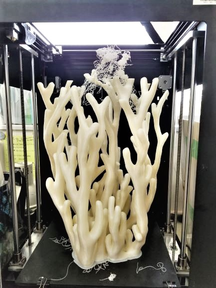
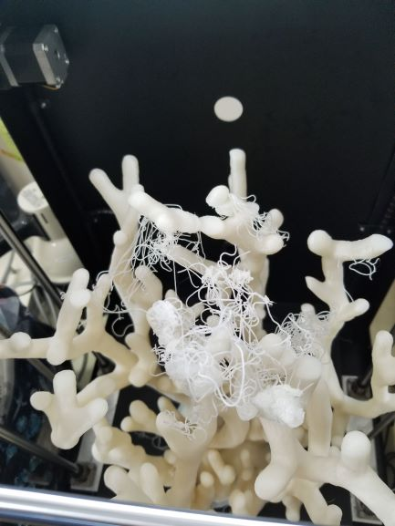
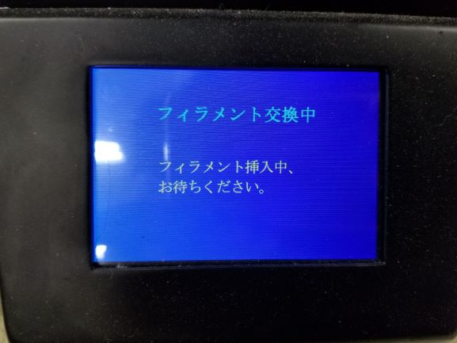
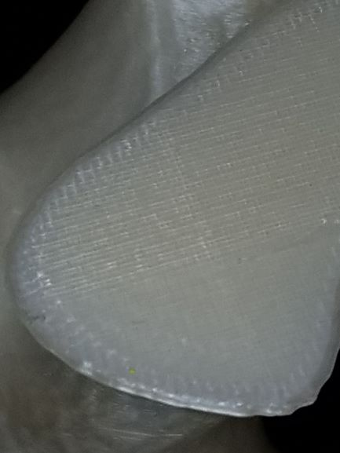
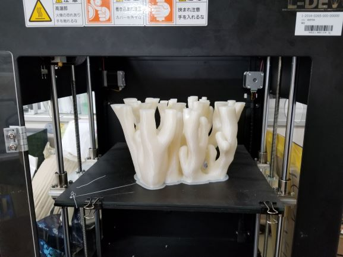

・試作データを基にモデリングし直しました。
・今回モデリングし直した箇所は本作1号のモデルをさらに上に、生やすような形でモデリングし直しました。
・そして、1ロール以上のフィラメントが必要なためプリント途中でフィラメント交換作業を行い作成しました。
・99％成功していたのでが、最後の最後でどういうわけか失敗してます。



・進捗35％のところでフィラメント交換を行いました。
・下の写真はフィラメント交換後にリスタートした面と、交換前のプリント途中のモデルです。


AUTODESKが無料提供しているソフトウェアのこと。
３Dデータを組み合わせたり、データの加工を行うためのソフトウェアです。 すでに作成してある３Dデータ同士をミックスして利用する場合などにも便利に利用できるツールです。
Meshmixerダウンロードリンク